About and leadership
Archive of the program website
About us
The DSSD Training Program is a collaboration between New York University, The NYU Grossman School of Medicine, Moi University, and Brown University that is funded by the National Institutes of Health.
A broader network of academic, industrial and non-governmental organizations (see below to learn more), opens a wide pool of potential, strong trainees from both data science and health backgrounds.
Stakeholders and partners
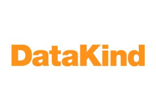
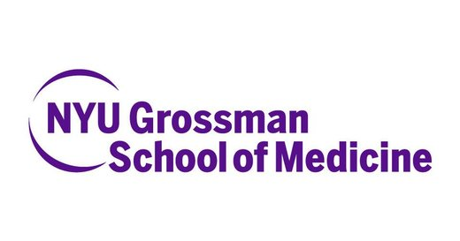
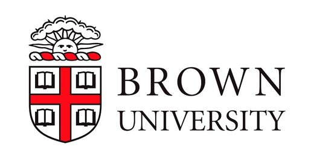
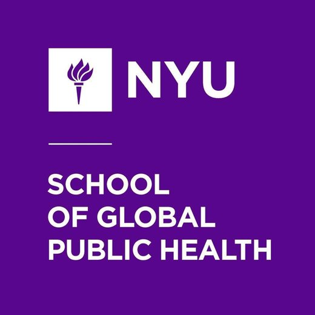
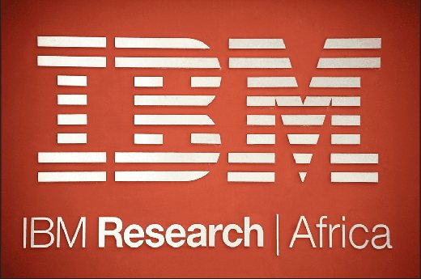
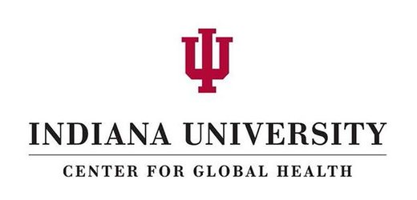
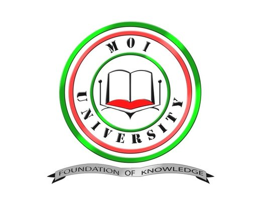
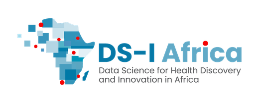
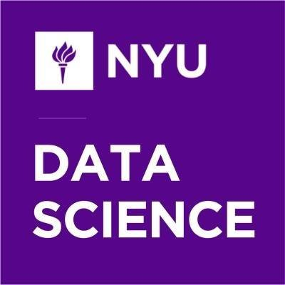
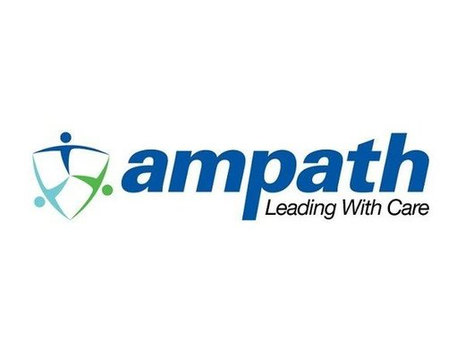
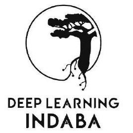
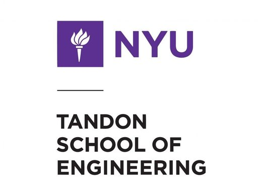
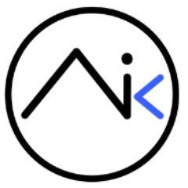
Program leadership
Joseph Hogan, ScD, MS
Program Co-Director (MPI) - Brown
Internal Advisory Board
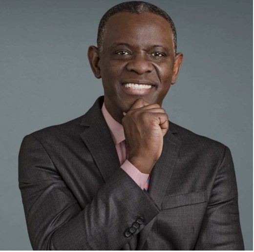
Olugbenga G. Ogedegbe, MD, MPH
Director - Institute for Excellence in Health Equity (NYU)
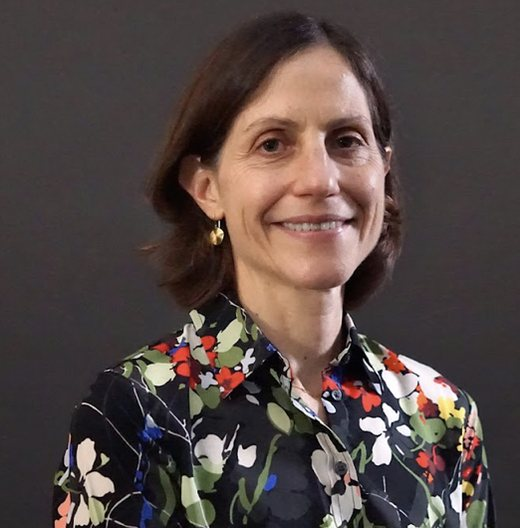
Rebecca Betensky, ScD
Professor and Chair - Department of Biostatistics at NYU School of Global Public Health
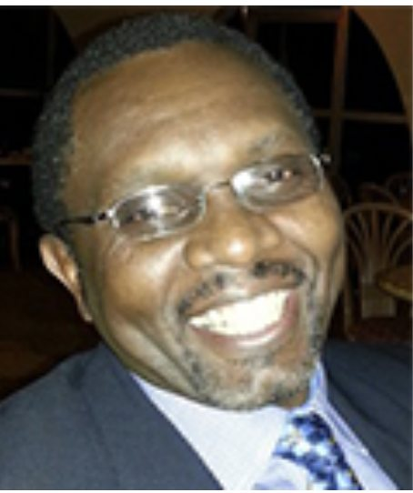
Winstone Nyandiko, MBChB, MMED, MPH
Associate Professor - Child Health and Pediatrics (Moi)
Training Advisory Board
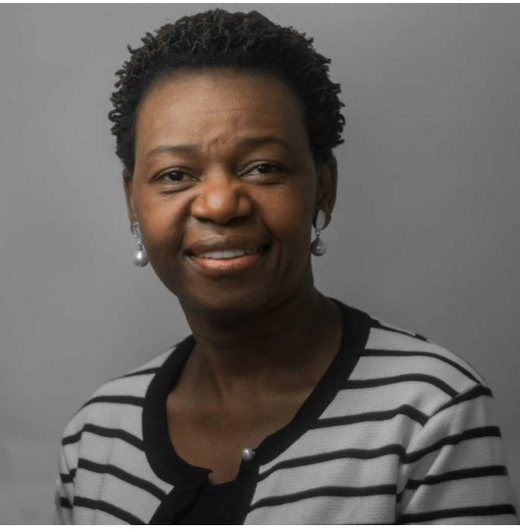
Ana Mocumbi, MD, PhD
Associate Professor - Universidade Eduardo Mondlane (Mozambique) & Affiliate Professor - University of Washington
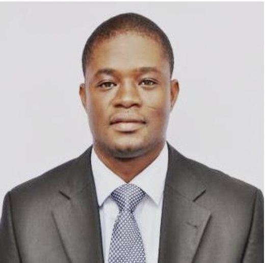
Amos Laar, PhD
Associate Professor - Department of Population, Family and Reproductive Health at the University of Ghana
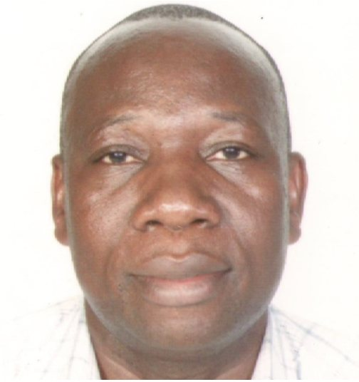
Boniface Akuku, PhD
Assistant Director - ICT at the Kenya Agricultural & Livestock Research Organization
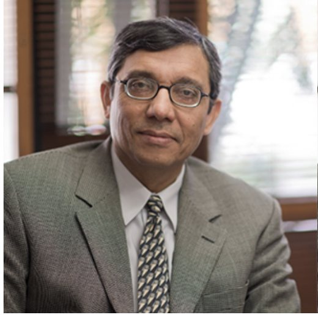
Zulfiqar Bhutta, MBBS
Robert Harding Inaugural Chair in Global Health - Hospital for Sick Children (Toronto, Canada)
Program leadership alumni
Iris Wagna, BSc.N, MPH
Iris served as Program Coordinator at AMPATH Kenya and Moi University, from the program’s inception until May 2024.
Julia Dickhaus, MSN, PhD Candidate
Julia served as Program Coordinator at NYU Langone Grossman School of Medicine from the program’s inception until May 2022. Julia is currently a PhD Candidate at Columbia University’s School of Nursing.
Jessica Gjonaj, MPH
Jessica served as Program Coordinator at NYU Langone Grossman School of Medicine from July 2022 thru October 2026. Jessica is currently a Data Analyst in the Rapid RCT Lab in the Department of Population Health at NYU Langone.